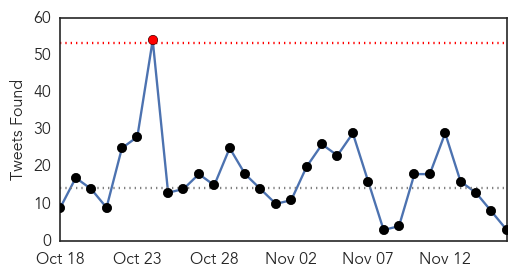
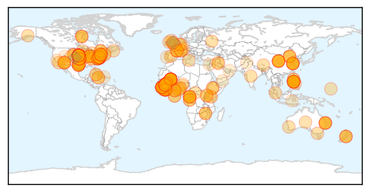
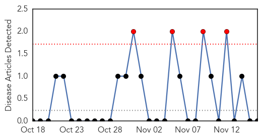

Ebola
30-Day Web Trend
0 alerts, 7 warnings
30-Day Twitter Trend
1 alerts, 0 warnings

Article Locations
Article Confidences
Top Articles:
- 1.000
- Very ill Ebola-infected Sierra Leone doctor being treated in US
- 1.000
- Doctor With Ebola Arrives in U.S. for Treatment
- 1.000
- Ebola-infected Sierra Leone doctor 'extremely ill' in US
- 1.000
- Surgeon flown from Sierra Leone to U.S. for Ebola treatment is in 'extremely critical' condition
- 1.000
- What is Ebola and how does it spread?
- 1.000
- New Ebola details emerge following release of Centers for Disease Control reports
- 1.000
- Morbidity and Mortality Weekly Report (MMWR): Ebola Epidemic — Liberia, March–October 2014 - Liberia
- 1.000
- Mali Already Has An Ebola Cluster: Can The Virus Be Stopped?
- 1.000
- Ebola Outbreak Kills Nearly 5,000 in West Africa
- 0.999
- Surgeon with Ebola arrives in U.S. for treatment
- 0.999
- Doctor With Ebola Arrives in U.S. for Treatment – WebMD
- 0.999
- Mali reports three deaths from Ebola; West Africa country borders hard-hit Guinea
- 0.999
- Liberia Sets December 25 Goal
- 0.999
- UPDATE 3-U.S. heightens Ebola screening for travelers from Mali
- 0.999
- Surgeon with Ebola coming to U.S. hospital for treatment Republican American
- 0.999
- Ebola outbreak: Sierra Leone surgeon in US for treatment
- 0.999
- China Sends 160 Health Workers To Liberia
- 0.999
- Ebola-infected Sierra Leone doctor 'extremely ill' in US
- 0.999
- QHC handled Ebola scare well: province
- 0.999
- Ebola-infected Sierra Leone doctor gets treated in US
- 0.999
- Chinese medics in Liberia to beef up Ebola fight
- 0.999
- Ebola, travel, and the fear of flying
- 0.999
- Critically ill Sierra Leone Ebola doctor begins treatment in US
- 0.999
- Ebola-infected Sierra Leone doctor ‘extremely ill’ in US
- 0.999
- Sierra Leone doctor with Ebola extremely critical
- 0.999
- Ministry says 145 volunteered to help fight Ebola - Sierra Leone
- 0.999
- Morbidity and Mortality Weekly Report (MMWR): Evidence for a Decrease in Transmission of Ebola Virus — Lofa County, Liberia, June 8–November 1, 2014 - Liberia
- 0.999
- DR Congo declares itself Ebola-free
- 0.999
- Chinese medics in Liberia to beef up Ebola fight
- 0.999
- RI patients test negative for Ebola: Ministry
- 0.998
- Ebola-infected Sierra Leone doctor 'extremely ill' in US
- 0.998
- Mali traces over 343 contacts in second Ebola wave
- 0.998
- Surgeon with Ebola 'extremely ill'
- 0.998
- U.S. heightens Ebola screening for travelers from Mali
- 0.998
- The human tragedy of Ebola
- 0.998
- Doctor ill with Ebola in Nebraska is in critical condition
- 0.998
- The Observer
- 0.998
- Ebola-infected doctor from Sierra Leone flown to US
- 0.998
- Homeland Security News Wire
- 0.998
- Ebola-infected doctor flown to US ‘extremely critical’
- 0.998
- US Ebola victim ‘extremely ill’
- 0.998
- Chuck Schumer on Ebola cost: Reimburse U.S. cities
- 0.998
- Critically ill Sierra Leone doctor with Ebola now in U.S
- 0.998
- Risk of Ebola Transmission By Airline Passengers RemainsMedicalResearch.com
- 0.998
- U.S. heightens Ebola screening for travelers from Mali
- 0.998
- Ellen Johnson Sirleaf Ends State of Emergency for Ebola
- 0.998
- Mosque In Mali Possibly Contaminated With Ebola Virus
- 0.997
- World leaders vow to 'extinguish' Ebola
- 0.997
- Nebraska hospital says Sierra Leone surgeon fighting for his life in Ebola ward
- 0.997
- U.S. hospital: Surgeon with Ebola ‘extremely ill’
Showing top 50 articles...
Top Tweets:
- 0.596
- Surgeon infected with Ebola virus in 'extremely critical' condition at Nebraska hospital http://t.co/S5xVsNCP1I
- 0.583
- RT: ML223 "Ebola est une réalité mais elle n'est pas une fatalité" dixit le ministre @MCamara2012 RadioKledu Mali http://t.…
- 0.561
- Ebola: course contre la mort en Sierra Leone http://t.co/XQ8uA7Cfbd via
Mold/Fungal
30-Day Web Trend
4 alerts, 0 warnings

30-Day Twitter Trend
0 alerts, 0 warnings

Article Locations

Article Confidences

Top Articles:
-
No articles found for Nov 16, 2014
Top Tweets:
-
No tweets found for Nov 16, 2014